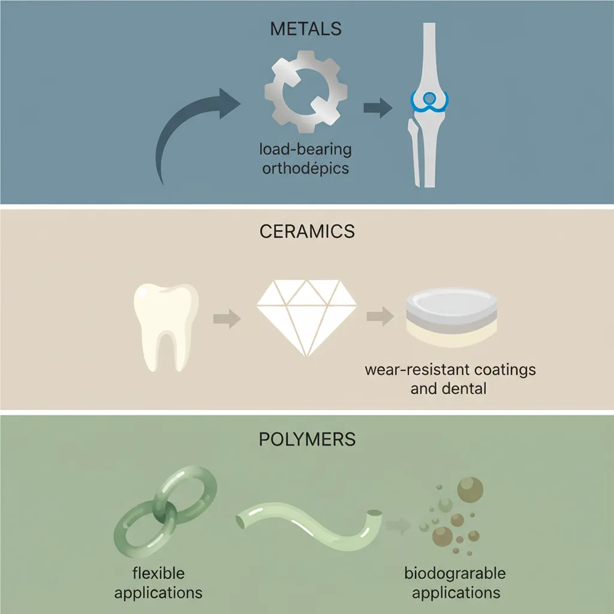
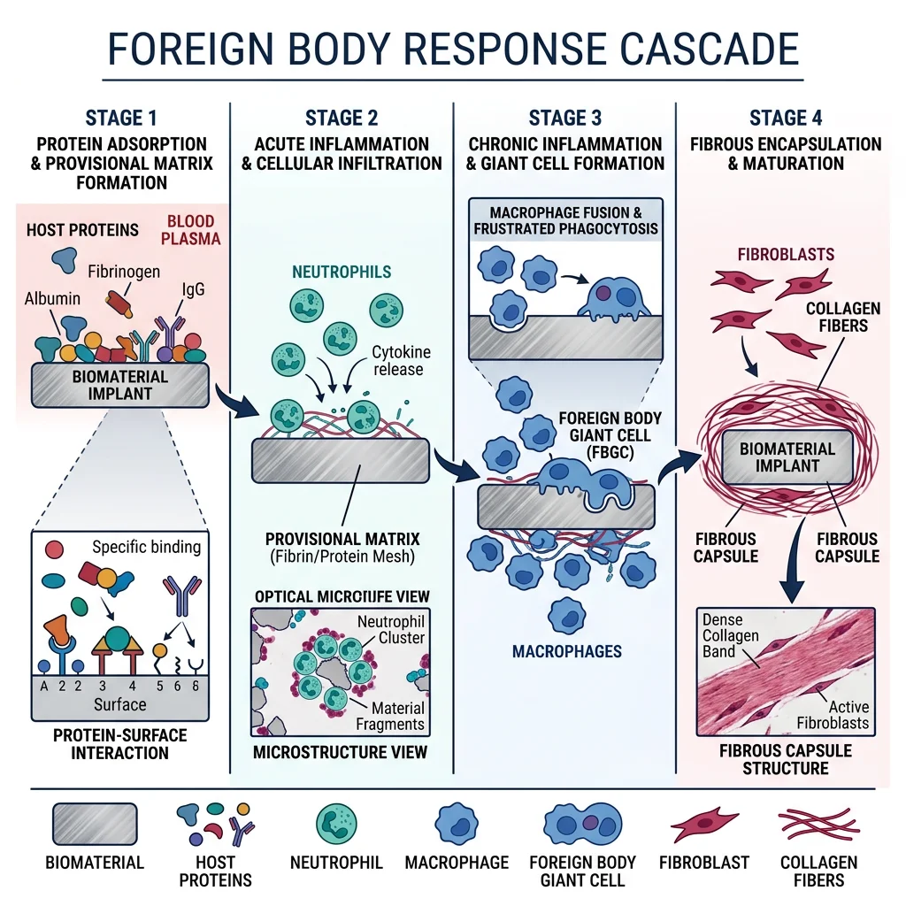
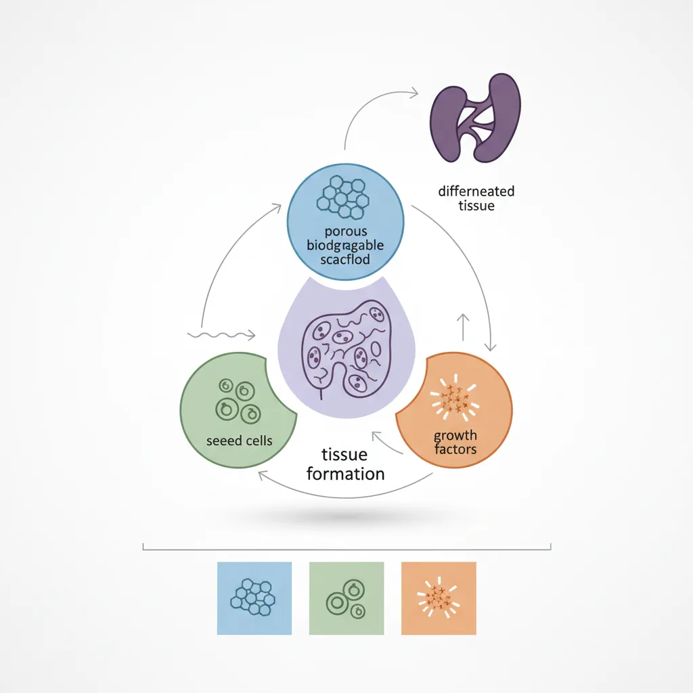
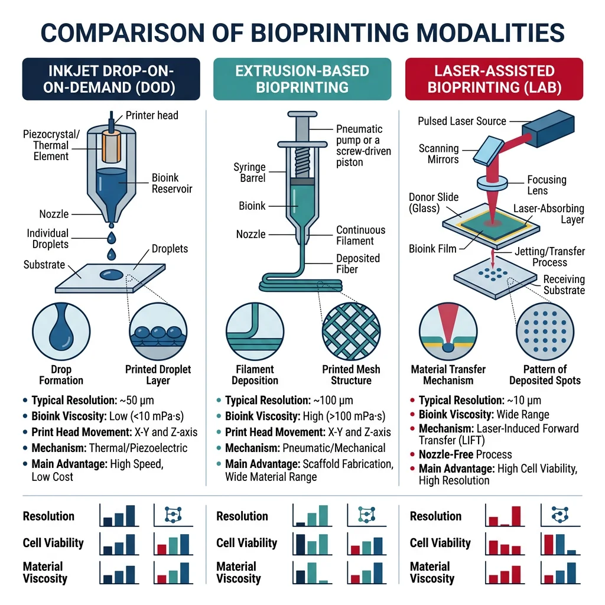
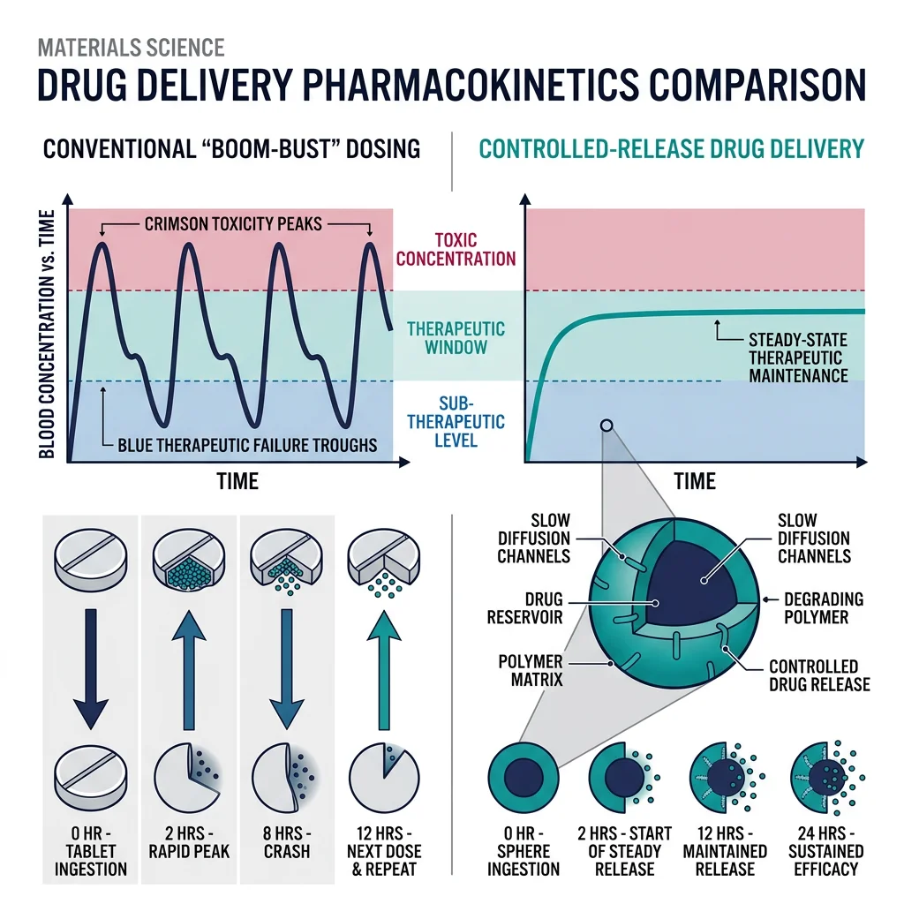

Implant Materials
Materials Science Mastery
Atomic Structure & Quantum Foundations
Quantum mechanics, bonding, band theory, Fermi energy, phononsCrystal Structures, Defects & Diffusion
FCC/BCC/HCP, Miller indices, dislocations, phase diagrams, Fick's lawsMetals & Alloys
Iron-carbon diagram, steels, aluminum, titanium, superalloys, heat treatmentPolymers & Soft Materials
Polymer chemistry, thermoplastics, viscoelasticity, rheology, biopolymersCeramics, Glass & Composites
Oxide ceramics, toughening, fiber-reinforced composites, interfacial bondingMechanical Behavior & Testing
Stress-strain, hardness, fatigue, fracture toughness, nanoindentationFailure Analysis & Reliability Engineering
Fractography, corrosion, tribology, root cause analysisNanomaterials & Smart Materials
Nanotubes, graphene, piezoelectrics, shape memory alloys, self-healingMaterials Characterization Techniques
XRD, SEM, TEM, AFM, DSC, TGA, spectroscopyThermodynamics & Kinetics of Materials
Gibbs free energy, CALPHAD, phase stability, solidificationElectronic, Magnetic & Optical Materials
Semiconductors, photovoltaics, dielectrics, superconductorsBiomaterials
Implants, biocompatibility, tissue engineering, drug deliveryEnergy Materials
Battery materials, hydrogen storage, fuel cells, nuclear materialsComputational Materials Science
DFT, molecular dynamics, FEM, materials informatics, AIThe field of biomaterials sits at the extraordinary intersection of materials science, biology, and medicine. Every material placed inside the human body must satisfy a dual mandate: it must perform a specific mechanical or functional role (supporting loads, conducting electrical signals, releasing drugs) while simultaneously being tolerated by living tissue. This section surveys the three great families of implant materials — metals, ceramics, and polymers — and their clinical applications.

Metallic Biomaterials
Metals dominate load-bearing orthopedic implants because they combine high strength, fracture toughness, and fatigue resistance — properties that ceramics and polymers cannot easily match. The three workhorse metallic biomaterials are:
| Alloy | Elastic Modulus (GPa) | Yield Strength (MPa) | Key Applications | Limitations |
|---|---|---|---|---|
| Ti-6Al-4V | ~110 | ~830 | Hip stems, dental implants, spinal cages | Stress shielding, V toxicity concerns |
| CoCrMo | ~230 | ~450–1000 | Femoral heads, knee bearings, dental | Metal ion release (Co, Cr), allergies |
| 316L Stainless Steel | ~200 | ~170–750 | Fracture fixation plates, screws, stents | Ni sensitivity, pitting corrosion |
| Cortical Bone (reference) | ~7–30 | ~100–230 | — | — |
Notice the enormous mismatch: metallic implant moduli are 5–30× stiffer than bone. This causes Stress Shielding — the implant carries most of the load, bone remodels away (Wolff's law), and the implant eventually loosens. This is one of the central design challenges in orthopedic biomaterials and has driven the development of porous and lattice structures that reduce effective stiffness.
Ceramic & Glass Biomaterials
Ceramics offer something metals cannot: the ability to chemically bond to living bone. While metals are bioinert (the body tolerates them but walls them off with fibrous tissue), certain ceramics are bioactive — they form a hydroxyapatite layer that directly integrates with bone mineral.
- Hydroxyapatite (HA) — Ca₁₀(PO₄)₆(OH)₂ — chemically identical to the mineral component of bone. Used as coatings on titanium implants (plasma-sprayed, ~50 μm thick) to accelerate osseointegration. Brittle on its own, but excellent as a bioactive coating.
- Bioglass (45S5) — Larry Hench's breakthrough: a SiO₂-Na₂O-CaO-P₂O₅ glass that bonds to both bone and soft tissue. When placed in body fluid, it forms an HA surface layer within hours. Used in bone grafts, dental applications, and wound healing.
- Alumina (Al₂O₃) — Extremely hard and wear-resistant. Used for femoral heads in hip replacements — an alumina-on-alumina bearing surface produces 100× less debris than metal-on-polyethylene. Bioinert but can be polished to near-zero friction.
- Zirconia (ZrO₂) — Tougher than alumina due to transformation toughening (tetragonal → monoclinic phase transformation at crack tips). Used for dental crowns, femoral heads, and emerging orthopedic applications. Aesthetic advantage: tooth-colored.
Polymeric Biomaterials
Polymers are the most versatile class of biomaterials — they can be molded, extruded, electrospun, and 3D-printed into virtually any shape, and their degradation rate can be tuned from days to years.
- UHMWPE (Ultra-High Molecular Weight Polyethylene) — The workhorse bearing surface in total joint replacements. Highly cross-linked UHMWPE liners in hip acetabular cups dramatically reduced wear particle generation and the associated inflammatory osteolysis.
- PMMA (Polymethyl Methacrylate) — Bone cement. Mixed intraoperatively and injected as a paste that hardens in minutes via an exothermic free-radical polymerization. Anchors implants mechanically but does not bond chemically to bone. Thermal necrosis from the curing reaction (~80°C) remains a concern.
- PLGA (Poly(lactic-co-glycolic acid)) — The gold standard of biodegradable polymers. By adjusting the ratio of lactic acid to glycolic acid monomers, degradation times can be tuned from weeks (high GA) to months (high LA). Used for resorbable sutures, drug delivery microspheres, and tissue engineering scaffolds.
- PEEK (Polyether ether ketone) — A high-performance thermoplastic with elastic modulus (~3.5 GPa) closer to cortical bone than metals. Radiolucent (transparent to X-rays), making post-operative imaging cleaner. Used in spinal fusion cages and cranial implants.
Case Study: The Evolution of Total Hip Replacement
Sir John Charnley's 1962 low-friction arthroplasty combined a stainless steel femoral stem, a small-diameter metal femoral head, and an UHMWPE acetabular cup — all anchored with PMMA bone cement. This design dominated for decades but suffered from:
- Wear debris — polyethylene particles triggered macrophage-mediated bone loss (osteolysis)
- Aseptic loosening — the #1 cause of revision surgery (15–20% of implants failed within 15 years)
- Cement-related issues — thermal necrosis, cement fracture, particle disease
Modern solutions include: highly cross-linked UHMWPE (reduced wear by 90%), ceramic-on-ceramic bearings (near-zero wear), cementless porous titanium stems (bone grows directly into porous surface — "press-fit" fixation), and modular designs allowing component exchange without removing well-fixed stems. Current hip replacements routinely last 25+ years.
import numpy as np
import matplotlib.pyplot as plt
# Biomaterial mechanical properties vs natural bone
materials = ['Cortical\nBone', '316L SS', 'CoCrMo', 'Ti-6Al-4V', 'PEEK', 'UHMWPE', 'Alumina', 'HA']
elastic_modulus = [20, 200, 230, 110, 3.5, 1.0, 380, 80] # GPa
yield_strength = [130, 250, 700, 830, 100, 25, 300, 40] # MPa (compressive for ceramics)
fig, (ax1, ax2) = plt.subplots(1, 2, figsize=(14, 6))
# Elastic modulus comparison
colors = ['#2ecc71', '#e74c3c', '#e74c3c', '#3498db', '#9b59b6', '#f39c12', '#1abc9c', '#e67e22']
bars1 = ax1.bar(materials, elastic_modulus, color=colors, edgecolor='black', linewidth=0.5)
ax1.axhline(y=20, color='green', linestyle='--', alpha=0.7, label='Cortical Bone (target)')
ax1.set_ylabel('Elastic Modulus (GPa)', fontsize=12)
ax1.set_title('Stiffness Mismatch: Implants vs Bone', fontsize=13, fontweight='bold')
ax1.legend()
ax1.set_yscale('log')
# Yield / compressive strength comparison
bars2 = ax2.bar(materials, yield_strength, color=colors, edgecolor='black', linewidth=0.5)
ax2.axhline(y=130, color='green', linestyle='--', alpha=0.7, label='Cortical Bone (target)')
ax2.set_ylabel('Yield / Compressive Strength (MPa)', fontsize=12)
ax2.set_title('Strength Comparison: Biomaterials', fontsize=13, fontweight='bold')
ax2.legend()
plt.tight_layout()
plt.savefig('biomaterial_properties.png', dpi=150, bbox_inches='tight')
plt.show()
print("Key: Ti-6Al-4V is 5.5x stiffer than bone => stress shielding risk")
print("PEEK (3.5 GPa) is the closest metallic/polymer match to cortical bone (20 GPa)")Biocompatibility & Body Responses
Every material that enters the human body triggers a cascade of biological responses. Understanding how the body reacts to foreign materials — and engineering surfaces that control those reactions — is the foundation of all biomaterial design.

The Foreign Body Response Cascade
When any material is implanted, the body follows a predictable four-stage sequence:
- Protein Adsorption (seconds–minutes) — Plasma proteins (albumin, fibrinogen, complement factors) coat the implant surface within seconds. This Vroman Effect determines everything that follows — cells never "see" the bare material directly; they interact only with the adsorbed protein layer. Hydrophobic surfaces preferentially adsorb fibrinogen (pro-inflammatory), while hydrophilic surfaces favour albumin (passivating).
- Acute Inflammation (hours–days) — Neutrophils and monocytes arrive at the implant site, releasing enzymes and reactive oxygen species. The coagulation cascade activates on contact with the surface. This is a normal wound-healing response and is expected with any surgical procedure.
- Chronic Inflammation (days–weeks) — If the material cannot be degraded, macrophages fuse into foreign body giant cells (FBGCs) — frustrated phagocytes that attempt to engulf the implant but cannot. These multi-nucleated cells are the histological hallmark of biomaterial implant sites and can persist for the lifetime of the device.
- Fibrous Encapsulation (weeks–months) — Fibroblasts deposit collagen around the implant, forming a dense fibrous capsule (50–200 μm thick). For bioinert materials, this encapsulation is the "end state" — the body walls off what it cannot destroy. The thickness and density of this capsule is a key biocompatibility metric.
Biocompatibility Testing Standards
Biocompatibility is not a single property — it's assessed through a rigorous, tiered testing hierarchy defined by ISO 10993 (Biological Evaluation of Medical Devices). No single test can declare a material "biocompatible"; the testing program depends on the device's contact type and duration:
| Testing Level | Methods | What It Tests | Duration |
|---|---|---|---|
| In Vitro (ISO 10993-5) | Cell culture (MTT assay, live/dead staining, LDH release) | Cytotoxicity — do cells survive on/near the material? | 24–72 hours |
| In Vivo (ISO 10993-6) | Animal implantation (rat subcutaneous, rabbit muscle, pig bone) | Tissue response, inflammation severity, fibrous capsule quality | Weeks to months |
| Hemocompatibility (ISO 10993-4) | Blood contact tests (hemolysis, thrombosis, coagulation, platelet adhesion) | Blood clotting, platelet activation, complement activation | Hours to days |
| Sensitization (ISO 10993-10) | Guinea pig maximization test, local lymph node assay | Allergic/hypersensitivity reactions (Ni, Cr, Co ions) | Weeks |
| Clinical Trials | Human studies (Phase I → II → III, regulatory submission) | Safety, efficacy, long-term performance in actual patients | Years (5–10+) |
Hemocompatibility deserves special attention for blood-contacting devices (heart valves, stents, hemodialysis membranes). When blood contacts a foreign surface, the coagulation cascade activates within seconds, forming thrombus (clots). Surface heparinization, PEG coatings, zwitterionic polymer brushes, and endothelial cell seeding are strategies to prevent device thrombosis — yet patients with mechanical heart valves still require lifelong anticoagulation therapy (warfarin).
Biocompatibility Classification
Biomaterials are classified into three fundamental categories based on their interaction with tissue:
| Class | Definition | Body Response | Examples |
|---|---|---|---|
| Bioinert | Minimal tissue interaction; no chemical bonding to host tissue | Fibrous capsule encapsulation — body walls off the implant | Titanium, alumina, UHMWPE, PEEK, zirconia |
| Bioactive | Forms direct chemical bond with living bone or soft tissue | Osseointegration — direct bone-implant contact without fibrous layer | Hydroxyapatite, bioglass 45S5, A-W glass-ceramic |
| Bioresorbable | Dissolves or degrades in the body; replaced by natural tissue over time | Gradual resorption with concurrent tissue regeneration | PLGA, PLA, tricalcium phosphate, Mg alloys, silk fibroin |
Tissue Engineering & Regenerative Medicine
Traditional implants replace damaged tissue; tissue engineering aims to regenerate it. The classic tissue engineering paradigm combines three pillars: a scaffold (structural template), cells (the biological machinery), and signaling molecules (growth factors that direct cell behavior). When all three are orchestrated correctly, the scaffold gradually degrades while new, living tissue takes its place.

Scaffold Design Principles
A tissue engineering scaffold must satisfy multiple, often competing requirements simultaneously:
- Porosity (60–90%) — Large interconnected pores (100–500 μm for bone, 20–100 μm for skin) allow cell infiltration, nutrient transport, and vascularization. But higher porosity means lower mechanical strength — a fundamental trade-off governed by the Gibson-Ashby relationship.
- Interconnectivity — Isolated pores are useless. Cells must migrate through the entire scaffold volume. Tortuosity (actual path length / straight-line distance) should be close to 1 for effective nutrient diffusion and waste removal.
- Degradation Rate Matching — The scaffold should degrade at the same rate that new tissue forms. Too fast → structural collapse before tissue matures. Too slow → scaffold blocks tissue ingrowth and prevents vascularization. For bone, degradation should match the ~6-month remodeling cycle.
- Surface Chemistry — Cell adhesion requires specific molecular cues. RGD peptide sequences (Arg-Gly-Asp), borrowed from fibronectin, can be grafted onto scaffold surfaces to provide molecular "handholds" for integrin receptors on cell membranes.
- Mechanical Properties — Must match target tissue. Scaffold stiffness even directs stem cell fate — a discovery called Mechanotransduction.
Cell-Material Interactions & Growth Factors
Cells interact with scaffold surfaces through a predictable sequence: adhesion → spreading → proliferation → differentiation. The key molecular players include:
- Integrins — Transmembrane receptors that bind to ECM proteins (fibronectin, collagen, laminin) and transmit mechanical signals into the cell interior via the cytoskeleton (mechanotransduction)
- Growth Factors — Soluble signaling proteins that control cell behavior:
- BMP-2 / BMP-7 (Bone Morphogenetic Proteins) — Induce osteoblast differentiation and bone formation; used clinically in spinal fusions and non-union fractures
- VEGF (Vascular Endothelial Growth Factor) — Stimulates angiogenesis — blood vessel growth into scaffolds, solving the critical nutrient transport problem for thick tissues
- TGF-β (Transforming Growth Factor beta) — Drives chondrocyte differentiation and cartilage matrix production
- FGF (Fibroblast Growth Factor) — Promotes cell proliferation, wound healing, and maintains stem cell self-renewal
- Hydrogels — Water-swollen polymer networks (PEG, alginate, hyaluronic acid, collagen, gelatin-methacryloyl) that mimic the extracellular matrix environment. Injectable hydrogels can be cross-linked in situ — via photo-crosslinking (UV/visible light), enzymatic reactions, or ionic gelation — enabling minimally invasive delivery of cells and growth factors through a syringe needle.
3D Bioprinting
3D bioprinting creates living tissue constructs by depositing "bioinks" — cell-laden hydrogels — in precise three-dimensional patterns. The three principal modalities each offer distinct trade-offs:

| Technique | Resolution | Cell Viability | Speed | Best For |
|---|---|---|---|---|
| Inkjet (drop-on-demand) | ~50 μm | ~85% | Fast | Thin tissues, skin, gradient patterning |
| Extrusion (pneumatic/mechanical) | ~200 μm | ~75–90% | Medium | Large constructs — bone, cartilage, vasculature |
| Stereolithography (SLA/DLP) | ~25 μm | ~90% | Slow | Microfluidic channels, high-precision scaffolds |
The bioprinting field has achieved remarkable milestones: functional mini-organs ("organoids") for drug testing, printed skin grafts applied directly to burn wounds, and vascularized cardiac patches with synchronized beating. The grand challenge remains: printing thick, vascularized tissues (> 1 cm) — without embedded blood vessels, cells deeper than ~200 μm from a nutrient source will die from hypoxia.
Case Study: Laboratory-Grown Trachea Transplant
In 2008, surgeons at Hospital Clínic de Barcelona performed the first transplant of a tissue-engineered airway. The four-step process demonstrated every principle of the tissue engineering paradigm:
- Decellularization — A donor trachea was chemically stripped of all donor cells (25 cycles of detergent + enzymatic washes) while preserving the intact collagen and elastin scaffold architecture
- Cell seeding — The decellularized scaffold was seeded with the patient's own bone marrow-derived mesenchymal stem cells (differentiated toward chondrocytes) and nasal epithelial cells
- Bioreactor maturation — The construct was incubated for 96 hours in a rotating bioreactor that provided mechanical stimulation and nutrient perfusion
- Surgical implantation — The cell-seeded scaffold was implanted to replace the patient's damaged left main bronchus
The patient recovered near-normal lung function with no immunosuppression required — because the cells were autologous (from the patient's own body), there was no immune rejection. At 5-year follow-up, the engineered airway remained functional and completely revascularized with native blood vessels.
Drug Delivery & Emerging Technologies
Conventional drug delivery (swallowing a pill, receiving an injection) suffers from boom-bust pharmacokinetics — drug concentration spikes above the toxic threshold immediately after dosing, then drops below the therapeutic window between doses. The patient experiences side effects at the peak and inadequate treatment at the trough. Controlled-release biomaterials solve this problem by maintaining drug concentration within the narrow therapeutic window for hours, days, or even months.

Controlled Release Profiles
Three fundamental release kinetics govern drug delivery system design:
- Zero-Order Release — Constant drug release rate over time (the ideal profile). Achieved with reservoir devices where diffusion through a rate-limiting membrane controls release. Think of water dripping from a faucet at a constant rate. Examples: transdermal patches (nicotine, fentanyl), osmotic pumps (OROS technology for oral delivery).
- First-Order Release — Release rate proportional to the amount of drug remaining (exponential decay — fast initially, then tapering). Common in simple matrix systems where drug near the surface releases quickly and deeper drug must diffuse further. Most oral tablets follow this profile.
- Burst Release — Rapid initial release followed by sustained release. Usually undesired (caused by drug adsorbed on or near the surface), but can be exploited therapeutically when a loading dose is needed — such as antibiotics in infection treatment where establishing a minimum inhibitory concentration quickly is critical.
The Higuchi model (1961) describes drug release from a planar matrix system: Q = KH√t, where Q is cumulative drug released per unit area and KH is the Higuchi dissolution constant. The characteristic √t dependence arises because the diffusion front must penetrate progressively deeper into the matrix. This model has been validated for thousands of controlled-release formulations and remains a cornerstone of pharmaceutical design.
Nanoparticle Drug Delivery
Nanoparticles (10–200 nm diameter) represent the frontier of targeted drug delivery, particularly for cancer chemotherapy where systemic toxicity from conventional dosing devastates healthy tissues. The key strategies include:
- Enhanced Permeability and Retention (EPR) Effect — Tumor blood vessels are structurally "leaky" (fenestrations of 100–800 nm vs ~6 nm gaps in healthy vasculature), allowing nanoparticles to accumulate preferentially in tumor tissue through Passive Targeting. Combined with poor lymphatic drainage in tumors, nanoparticles concentrate at 10–50× higher levels than in normal tissue.
- PEGylation (Stealth Coating) — Coating nanoparticles with polyethylene glycol (PEG, MW 2000–5000 Da) creates a hydrophilic "brush" layer that prevents protein adsorption (opsonization) and recognition by liver and spleen macrophages. PEGylated nanoparticles circulate in the bloodstream for hours instead of minutes — dramatically increasing the probability of reaching tumor tissue via the EPR effect.
- Active Targeting — Conjugating antibodies, peptides, or aptamers to nanoparticle surfaces enables receptor-mediated endocytosis into specific cell types. Examples: folate-targeted nanoparticles for ovarian cancer (folate receptors 100× overexpressed), HER2-antibody conjugates for breast cancer, transferrin-decorated particles for brain tumors.
- Stimulus-Responsive Release — Drug release triggered by the tumor microenvironment: pH-sensitive (tumors are acidic, pH ~6.5 vs 7.4 in blood), temperature-sensitive (hyperthermia-activated), redox-sensitive (elevated glutathione in cancer cells), or externally triggered (alternating magnetic fields, focused ultrasound, near-infrared light).
Case Study: Drug-Eluting Coronary Stents
Bare-metal coronary stents solved the acute problem of opening blocked arteries, but triggered a new one: in-stent restenosis — smooth muscle cell proliferation that re-narrowed the vessel in 20–30% of patients within 6 months. Drug-eluting stents (DES) solved restenosis by coating the metal scaffold with a polymer matrix that slowly releases antiproliferative drugs:
- Sirolimus (Cypher stent, 2003) — mTOR pathway inhibitor that blocks smooth muscle cell division. Reduced restenosis from ~25% to <5%. The polymer coating (PBMA/PEVA blend) releases drug over ~90 days with near-zero-order kinetics.
- Paclitaxel (Taxus stent, 2004) — Microtubule stabilizer that arrests cell division in mitosis. Different mechanism of action, similar clinical outcomes to sirolimus.
- Late stent thrombosis — An unexpected new complication emerged: the antiproliferative drugs also inhibited endothelial healing, leaving the stent's bare metal struts exposed to flowing blood for months → delayed thrombus formation. Solved with extended dual antiplatelet therapy (aspirin + clopidogrel for 12+ months) and next-generation bioabsorbable polymer coatings that disappear after drug delivery is complete, allowing full endothelialization.
Current state-of-the-art: bioresorbable vascular scaffolds (BVS) — the entire stent dissolves over 2–3 years, leaving a healed, flexible, vasoreactive artery with no permanent metal cage. Material: poly-L-lactic acid (PLLA) backbone with everolimus drug coating. While early BVS devices (Abbott Absorb) showed mixed results, next-generation designs with thinner struts and improved radial strength are in clinical trials.
Bioresorbable Electronics & Frontier Technologies
Bioresorbable electronics represent a remarkable convergence of semiconductor technology and biomaterials — electronic devices that perform a medical function inside the body and then harmlessly dissolve when no longer needed, eliminating the second surgery for device removal. Key material innovations include:
- Silicon nanomembranes (50–100 nm thick) — dissolve in biofluids at ~2 nm/day via hydrolysis. At this thickness, Si is flexible, transparent, and fully functional as a semiconductor but thin enough to dissolve completely within weeks to months.
- Zinc and molybdenum conductors — biodegradable metal interconnects and electrodes that replace gold/copper wiring. Zn dissolves at ~1 μm/day in physiological saline; Mo dissolves more slowly for longer-lived devices.
- Silk fibroin substrates — mechanically robust, optically transparent, and programmable dissolution rate (minutes to years) based on β-sheet crystallinity controlled during fabrication
- Biodegradable batteries — Mg/Fe galvanic cells and enzymatic biofuel cells power devices for weeks before dissolving
Clinical applications already demonstrated or in trials include: temporary cardiac pacemakers (managing post-surgical arrhythmias for 5–7 days, then dissolving — no lead extraction surgery), intracranial pressure sensors (monitoring traumatic brain injury recovery), infection-monitoring implants (detecting biofilm formation via impedance changes on orthopedic hardware), and post-surgical wound heating pads (accelerating healing via controlled tissue warming). The entire device performs its function, then every component — semiconductor, conductor, substrate, encapsulant — is resorbed by the body.
import numpy as np
import matplotlib.pyplot as plt
# Higuchi Drug Release Kinetics Simulation
# Q(t) = K_H * sqrt(t) for diffusion-controlled matrix drug delivery
# Time array: 0 to 30 days (in hours for Higuchi calculation)
time_hours = np.linspace(0, 720, 500)
time_days = time_hours / 24
# Higuchi constants (mg/cm^2/hr^0.5) for different polymer systems
systems = {
'PLGA 50:50 (fast)': {'Kh': 0.45, 'total': 10.0, 'color': '#e74c3c'},
'PLGA 85:15 (medium)': {'Kh': 0.25, 'total': 10.0, 'color': '#3498db'},
'PCL (slow)': {'Kh': 0.12, 'total': 10.0, 'color': '#2ecc71'},
}
fig, (ax1, ax2) = plt.subplots(1, 2, figsize=(14, 6))
# Plot 1: Cumulative drug release vs time
for name, p in systems.items():
Q = p['Kh'] * np.sqrt(time_hours)
Q_pct = np.minimum(Q / p['total'] * 100, 100) # Cap at 100%
ax1.plot(time_days, Q_pct, linewidth=2.5, label=name, color=p['color'])
ax1.axhspan(40, 80, alpha=0.1, color='green', label='Therapeutic Window')
ax1.set_xlabel('Time (days)', fontsize=12)
ax1.set_ylabel('Cumulative Drug Released (%)', fontsize=12)
ax1.set_title('Higuchi Model: Drug Release from Polymer Matrices', fontsize=13, fontweight='bold')
ax1.legend(fontsize=9, loc='lower right')
ax1.set_xlim(0, 30)
ax1.set_ylim(0, 105)
ax1.grid(True, alpha=0.3)
# Plot 2: Instantaneous release rate dQ/dt = Kh / (2*sqrt(t))
for name, p in systems.items():
t_nz = time_hours[1:] # Avoid division by zero at t=0
rate = p['Kh'] / (2 * np.sqrt(t_nz))
rate_pct = rate / p['total'] * 100
ax2.plot(time_days[1:], rate_pct, linewidth=2.5, label=name, color=p['color'])
ax2.set_xlabel('Time (days)', fontsize=12)
ax2.set_ylabel('Release Rate (%/hour)', fontsize=12)
ax2.set_title('Instantaneous Release Rate (dQ/dt)', fontsize=13, fontweight='bold')
ax2.legend(fontsize=9)
ax2.set_xlim(0, 30)
ax2.grid(True, alpha=0.3)
plt.tight_layout()
plt.savefig('drug_release_higuchi.png', dpi=150, bbox_inches='tight')
plt.show()
print("Higuchi Model: Q(t) = K_H * sqrt(t)")
print("The decreasing release rate over time is characteristic of diffusion-controlled systems")
print("PLGA 50:50 releases ~121% of dose by day 30 (capped at 100% = fully released)")Practice Exercises
- Stress Shielding Analysis: A Ti-6Al-4V hip stem (E = 110 GPa) is implanted adjacent to cortical bone (E = 20 GPa). Using the rule of mixtures for load sharing between two parallel elements, estimate what fraction of the physiological load the implant carries versus the bone. Explain why this leads to bone resorption (Wolff's law) and propose two design strategies — one materials-based and one geometry-based — to mitigate stress shielding.
- Biocompatibility Classification: Classify each of the following materials as Bioinert, Bioactive, or Bioresorbable, and describe the expected tissue response at 6 months post-implantation: (a) alumina femoral head, (b) hydroxyapatite coating on a titanium dental implant, (c) PLGA 50:50 suture, (d) PEEK spinal cage, (e) bioglass 45S5 bone graft substitute.
- Scaffold Design Problem: You are designing a bone tissue engineering scaffold from PLGA with 80% porosity and 300 μm average pore diameter. PLGA bulk modulus is ~2 GPa. Using the Gibson-Ashby open-cell foam model (Escaffold/Esolid ≈ (ρscaffold/ρsolid)²), calculate the scaffold's effective modulus. Compare this to cortical bone (~20 GPa) and cancellous bone (~0.1–1 GPa). Is this scaffold suitable for load-bearing vs. non-load-bearing bone repair? What modifications could improve mechanical performance?
- Drug Release Calculation: A PLGA microsphere drug delivery system has a Higuchi constant KH = 0.35 mg·cm⁻²·hr⁻⁰·⁵ and is loaded with 8 mg total drug. (a) Calculate cumulative drug released after 1 day, 7 days, and 21 days. (b) What percentage of total drug is released at each time point? (c) At what time will 80% of the drug be released? (d) Calculate the instantaneous release rate at t = 24 hours and t = 168 hours — explain why the rate decreases.
- Stent Design Trade-Off: Compare bare-metal stents (BMS), first-generation drug-eluting stents (DES with durable polymer), second-generation DES (bioabsorbable polymer), and bioresorbable vascular scaffolds (BVS) across these criteria: restenosis rate, late thrombosis risk, duration of dual antiplatelet therapy, long-term vessel compliance, and suitability for future reintervention. Which technology represents the best current compromise, and why?
- Python Simulation Challenge: Model a scaffold degradation + tissue growth system. Assume scaffold mass follows first-order decay: Mscaffold(t) = M₀·e−kdt with kd = 0.01/day and M₀ = 100 mg. Tissue mass follows a logistic growth curve: Mtissue(t) = Mmax / (1 + e−kg(t − t₅₀)) with Mmax = 100 mg, kg = 0.08/day, and t₅₀ = 60 days. Plot both curves on the same axes for 180 days. Find: (a) At what time does tissue mass first exceed scaffold mass? (b) Calculate total structural support (scaffold + tissue) over time. (c) Is there a dangerous "valley" where total support drops below 50% of the initial scaffold mass?
Conclusion & Next Steps
Biomaterials represent one of the most impactful applications of materials science — every concept from crystal structure to polymer chemistry to surface engineering converges at the interface between synthetic materials and living tissue. We traced the journey from metallic hip stems (where stiffness mismatch and wear debris drove decades of design iteration) through bioactive ceramics that chemically bond to bone, biodegradable polymers programmed to disappear on schedule, tissue-engineered constructs grown from a patient's own cells, and nanoparticles that navigate the bloodstream to deliver drugs precisely where needed.
The field advances rapidly toward a future where implants are temporary by design — bioresorbable stents that restore arterial function then vanish, electronic sensors that monitor healing then dissolve, and scaffolds that guide tissue regeneration then gracefully degrade. The ultimate goal of biomaterials is, paradoxically, to make themselves unnecessary — to serve as temporary guides that coax the body into healing itself, then step aside entirely.